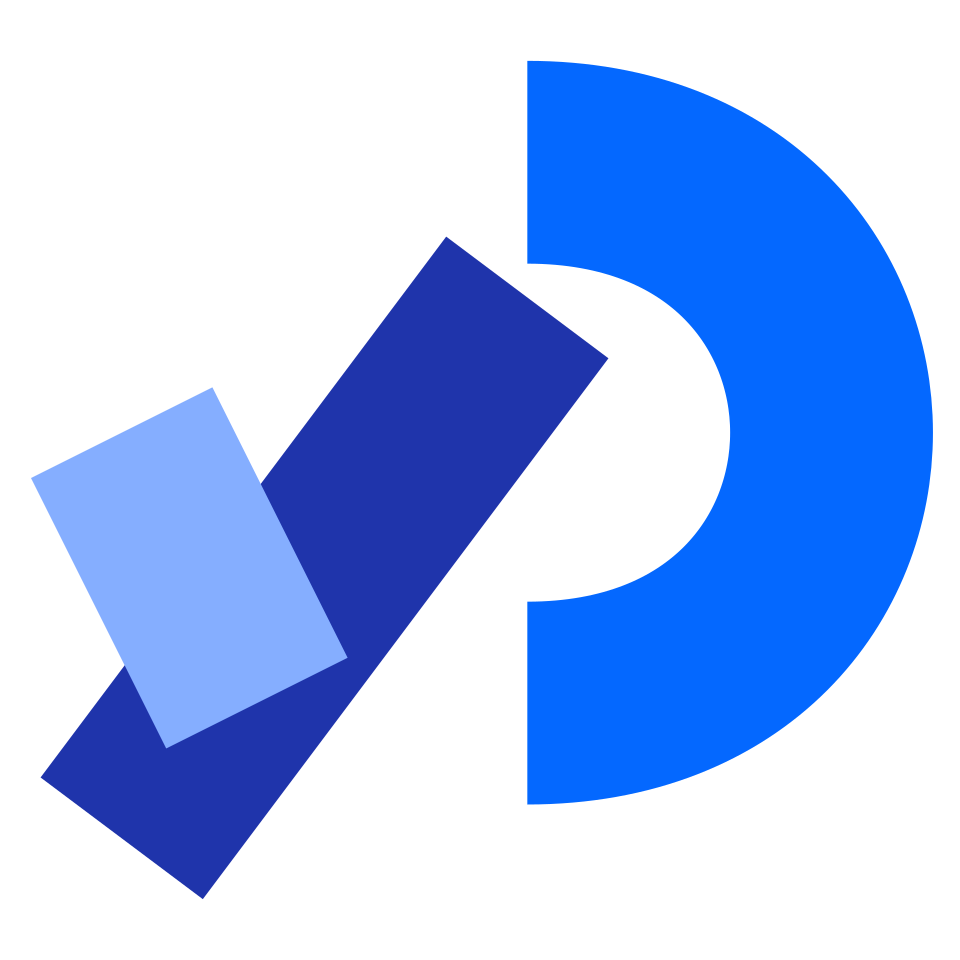

Hello! I'm Annika, an Interaction Designer & Creative Technologist based in Ireland.
My core interests are in the intersection of digital fabrication and creative coding. To me, technology is most powerful when it steps off the screen and into the tactile world.
My Approach
My background is shaped by a dual appreciation for technical precision and human-centered storytelling. During my time at the University of Limerick, I developed a multidisciplinary toolkit from soldering circuits to high-fidelity UI/UX design.
My Motivation
I am motivated by the challenge of transparency, taking complex technology and making it accessible to everyone. As a designer, I prioritise accessibility, social impact, and purpose.
My Future
Looking forward, I am finding a path as a Creative Technologist working on interactive installations, smart environments, and tools for social good.
"How can we use emerging technology to create experiences that are both functional and deeply human?"
My Software & Hardware Toolkit
 Figma
Figma
 InDesign
InDesign
 Blender
Blender
 FreeCAD
FreeCAD
 Arduino
Arduino

Processing HTML
HTML
 CSS
CSS
 JavaScript
JavaScript